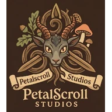

Explore
Follow old trails, cross living biomes, and find stories rooted in the landscape.

A small independent game studio
We make games where nature is not the backdrop—it is the story. Wander slowly. Befriend the wild. Find wonder in the small things.
PetalScroll Studios builds warm, mysterious worlds that reward attention instead of urgency.
Follow old trails, cross living biomes, and find stories rooted in the landscape.
Earn the trust of magical creatures. Companionship begins with kindness.
Keep a scroll of your own journey—its discoveries, friendships, and quiet moments.

Now in pre-alpha
A light-fantasy Roblox world shaped by first–fourth century Celtic and Gallic influence, quiet wonder, nature, and folklore. Trust, capture, and bonding guide each creature relationship.
Our vision
PetalScroll Studios celebrates exploration, discovery, and connection. We believe games can be gentle without being empty—and mysterious without always being dangerous.